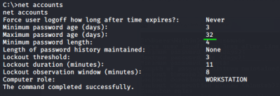
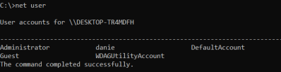
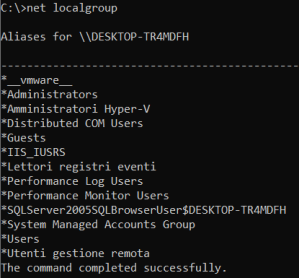

net
net accountsused to set the policy settings on local computer such as account policies and
password policies net userlist of all local users defined on the machine
net localgrouplocal groups created on the machine
 net localgroup administratorsaccounts that are members of the local administrators group
C:> net localgroup administrators